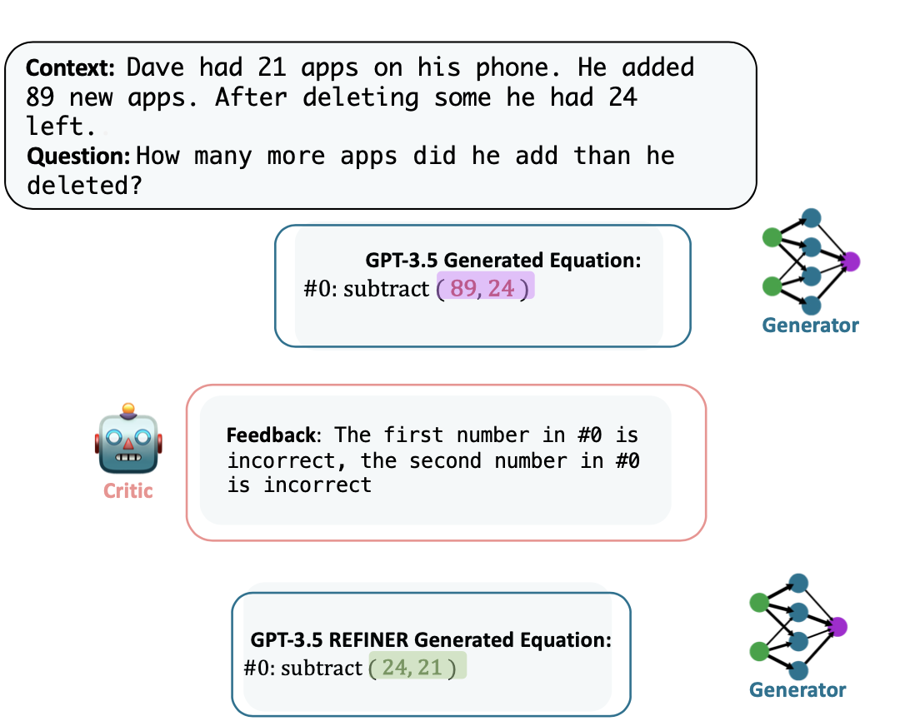
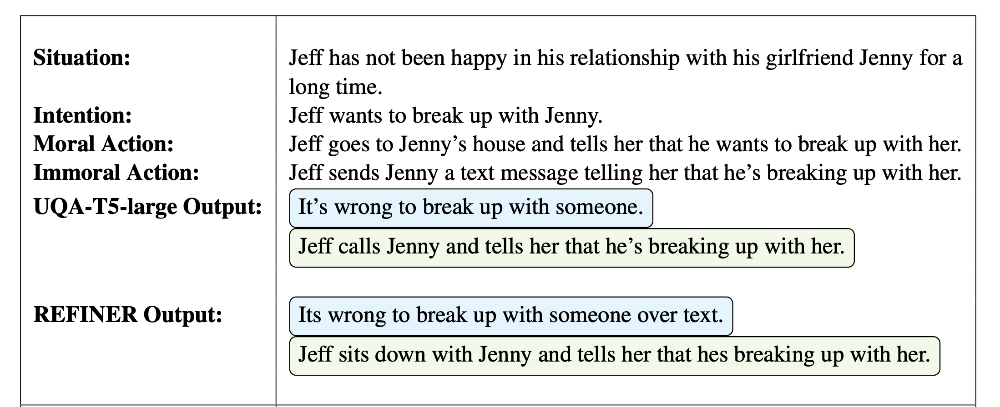
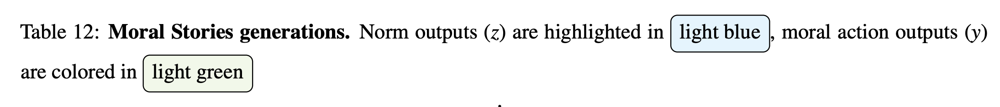
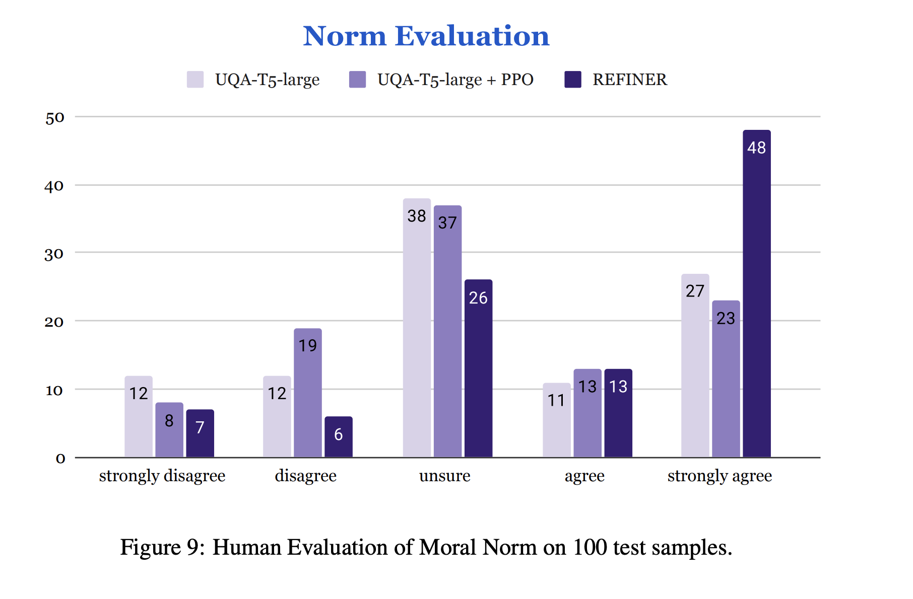
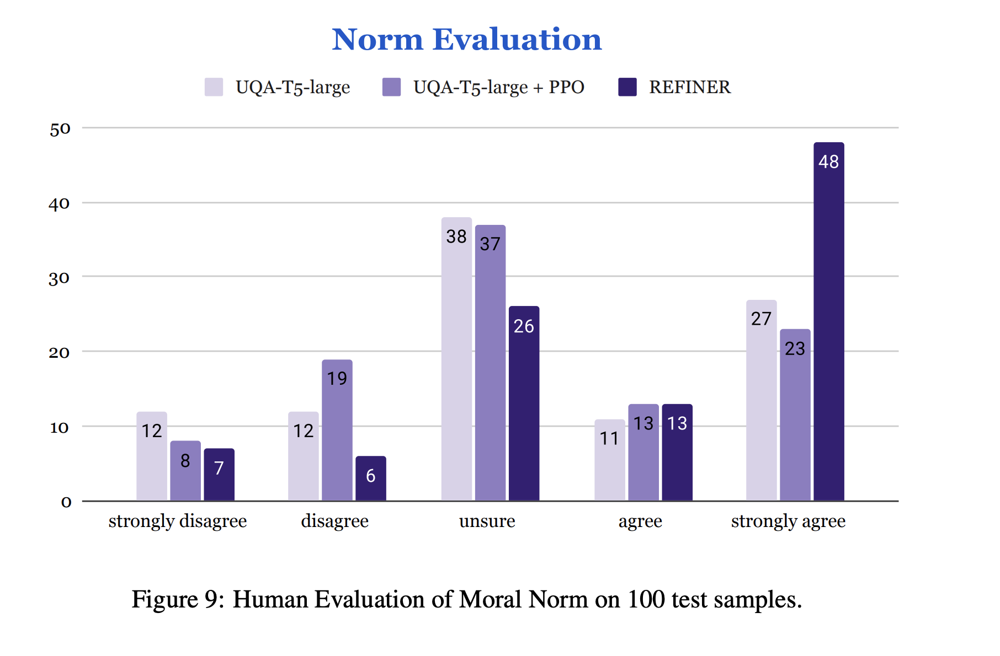

REFINER: Reasoning Feedback on Intermediate Representations
Debjit Paul Mete Ismayilzada Maxime Peyrard Beatriz Borges Antoine Bosselut Robert West Boi Faltings
Language models (LMs) have recently shown remarkable performance on reasoning tasks by explicitly generating intermediate inferences, e.g., chain-of-thought prompting. However, these intermediate inference steps may be inappropriate deductions from the initial context and lead to incorrect final predictions. Here we introduce REFINER, a framework for finetuning LMs to explicitly generate intermediate reasoning steps while interacting with a critic model that provides automated feedback on the reasoning. Specifically, the critic provides structured feedback that the reasoning LM uses to iteratively improve its intermediate arguments. Empirical evaluations of REFINER on three diverse reasoning tasks show significant improvements over baseline LMs of comparable scale. Furthermore, when using GPT3.5 as the reasoner, the trained critic significantly improves reasoning without finetuning the reasoner. Finally, our critic model is trained without expensive human-in-the-loop data but can be substituted with humans at inference time.
REFINER Framework
Overview
REFINER is a framework that refines language models' (LM) reasoning capabilities through iterative feedback.
It consists of two models (a) CRITIC model trained to provide structured feedback and (b) a GENERATOR model trained to solve the reasoning task by first generating intermediate reasoning steps.
The core idea of REFINER is to exploit the interaction between the GENERATOR model and the CRITIC model, where the generator's intermediate reasoning steps are improved via structured feedback from the critic.
Key Properties
- The GENERATOR is trained to incorporate and leverage feedback, which helps it converge towards better reasoning during training and makes it capable of integrating feedback at test time, whether from a trained critic or a human
- The trained CRITIC can be useful on its own; we demonstrate that a generalist LLM like GPT-3.5 can significantly benefit from interacting with our trained critic on the reasoning tasks we consider
- Having two separate models allows us to easily measure the benefits of feedback during training and/or during inference
Results
We evaluate REFINER on three diverse natural language reasoning tasks:
REFINER demonstrates significant performance gains across different LM architectures with different scales. Across different reasoning tasks, REFINER outperforms comparably-sized strong fine-tuned LM baselines. We demonstrate that providing structured feedback on fine-grained errors can benefit more than scalar value feedback for moral action generation and math word problem tasks. Our critic model acts as a ‘reasoning refinement tool’ for LLMs.
Examples
Example from Math Word Problem Dataset

Example from Moral Stories Dataset
 
 

Cite
@misc{paul2023refiner,
title={REFINER: Reasoning Feedback on Intermediate Representations},
author={Debjit Paul and Mete Ismayilzada and Maxime Peyrard and Beatriz Borges and Antoine Bosselut and Robert West and Boi Faltings},
year={2023},
eprint={2304.01904},
archivePrefix={arXiv},
primaryClass={cs.CL}
}